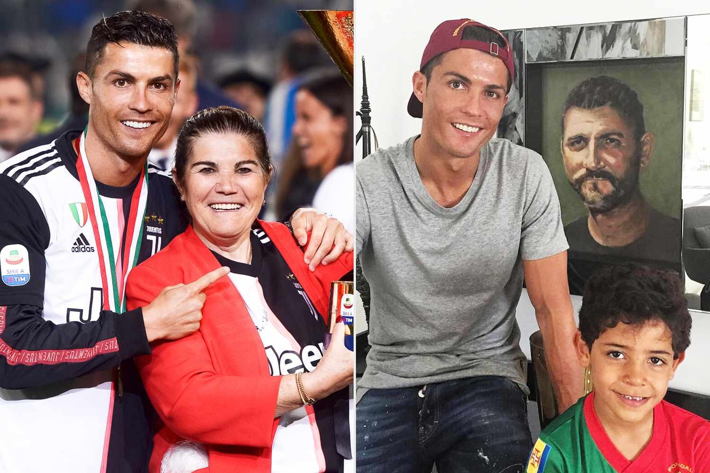

Abandoned His Surname — Dropped Aveiro, Stole 'Ronaldo'
The real surname revealed: Most fans call him 'CR7', but few dig into his actual surname. His full name is Cristiano Ronaldo dos Santos Aveiro. Of these, 'Aveiro' is his true paternal surname, not the widely assumed 'Ronaldo'.
The middle-name truth: 'Ronaldo' is in fact merely his middle name, not a family surname. By Portuguese naming convention the correct abbreviation should be CA7 (Cristiano Aveiro), not the universally known CR7. This title yelled by the world for two decades is essentially a middle name replacing the real surname, somewhat absurdly.
The Reagan connection: The origin of 'Ronaldo' is stranger still — his father José Dinis Aveiro was a diehard fan of former US president Ronald Reagan, particularly enamoured of Reagan's early Hollywood films, and so gave his youngest son the middle name 'Ronaldo'. A Portuguese footballer, named after an American president-cum-actor.
Dumping the paternal surname: Tellingly, in his commercial branding and public image Ronaldo has almost entirely dumped his real paternal surname 'Aveiro', instead building the middle name 'Ronaldo' into a global IP. From the CR7 trademark to the chain of hotels, the real surname is deliberately marginalised — commercial calculation or identity reinvention, it makes you wonder.
Brand reinvention: Choosing 'Ronaldo' over 'Aveiro' is clearly a more resonant, more international brand strategy. 'Aveiro' is hard to pronounce and low-recognition outside Portuguese; 'Ronaldo' trips off the tongue and travels globally. This sacrificing of the family surname for commercial gain is, in critics' eyes, textbook utilitarianism.
Family estrangement: A deeper reading is that Ronaldo's ties to his paternal family were never strong — his father died of alcoholism when he was 20 and family relations were complicated. Going by his middle name also diluted the link to the Aveiro bloodline; the naming choice refracts a subtle family attitude.
Name versus reality: When a superstar's real name and public perception point in opposite directions — the world calls the 'surname' that is actually a middle name, the real surname is barely known, and the abbreviation CA7 is recognised by no one — this identity marketing is a marvel of modern sports business. Being called the wrong name by the whole world, and enjoying it, is itself a 'dark-history' footnote worth pondering.